ERA5's other variables cut the error of same-hour solar farm output estimates by about 12%
Giving an XGBoost model every ERA5 weather variable, instead of only solar radiation, temperature, and sun position, cut its error in estimating the output of six Lincolnshire solar farms by about 12%. XGBoost is a gradient-boosted tree model. ERA5 is the European Centre for Medium-Range Weather Forecasts' (ECMWF) estimate of past weather, called a reanalysis. The XGBoost model's estimate of output is not a forecast, because the model sees ERA5's weather for the same hour as the output it estimates. Total cloud cover and the three cloud-layer covers give about half of the 12% gain. The cloud groups are largely interchangeable with the other variables. How the gain splits between the groups therefore depends on the order in which the study added them. ERA5's cloud fields come from its analysis, which has absorbed observations made after the short forecasts that give ERA5's solar radiation started. Part of the gain from the cloud fields may therefore be a timing advantage that a real forecast lacks. The page does not say that a forecast would gain as much. A follow-up study tests whether a forecast does, using forecasts from ECMWF's Integrated Forecasting System (IFS) at the lead times a live forecast would use.
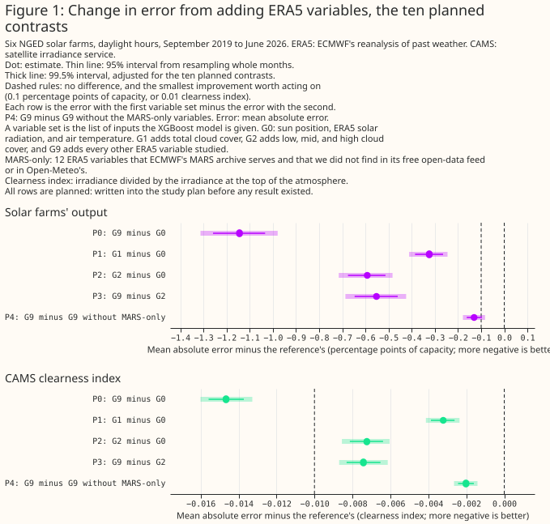
Every number on this page is a mean absolute error in percentage points of a farm's capacity, and a negative difference is a gain. An error is a mean absolute error as a percentage of a farm's capacity. A difference of 0.1 is 0.1 percentage points of capacity, called "points". A bracket holds a 95% interval from resampling whole months, unless the text says 99.5%, the level adjusted for the ten planned contrasts. A contrast is planned if the study plan named it before any result existed. The smallest improvement worth acting on is 0.1 points for output and 0.01 for the clearness index from the Copernicus Atmosphere Monitoring Service (CAMS), a second target explained below. G0 is the minimal variable set. G1 adds total cloud cover, G2 adds the three cloud layers, and G9 adds every ERA5 variable studied. P0 is G9 minus G0, P1 is G1 minus G0, P2 is G2 minus G0, P3 is G9 minus G2, and P4 is G9 minus G9 without 12 variables that we call MARS-only, defined below.
- Which ERA5 variables help estimate solar farm output? Cloud cover first, then the later groups in smaller steps. Adding total cloud cover (G1) lowers the error from 9.22% to 8.89% of capacity (−0.32 points, 99.5% interval [−0.41, −0.25]). Adding the cloud layers as well (G2) lowers the error by 0.59 points [−0.72, −0.48], or 6.4%. Adding every variable (G9) lowers the error by 1.14 points [−1.31, −0.98], or 12.4%. All three planned contrasts, P1, P2, and P0, beat the smallest improvement worth acting on (Figure 1). The full set lowers the error at every farm, by 9% to 15% (Figure 6).
- Do the ERA5 variables beyond the cloud layers help? Yes, but the credit cannot be split cleanly. Going from G2 to G9 lowers the error by a further 0.55 points (95% interval [−0.65, −0.46]). Cloud water and cloud base height give the largest single step (0.33 points). The later groups each change the error by between +0.03 points (snow and albedo, which make the error worse) and −0.07 points. Removing any one group from the full set raises the error by at most 0.07 points, probably because the groups carry overlapping information (Figures 7 and 10).
- Is it worth fetching the 12 MARS-only variables? Unresolved. ERA5 provides all 12 through the Climate Data Store. For ECMWF's operational IFS forecast, we found them in its Meteorological Archival and Retrieval System (MARS) and not in its free open-data feed or in Open-Meteo's, although we did not check every variable (see Discussion). The study trained every planned contrast at two XGBoost tuning settings, a main setting and a second, more heavily regularised setting. The rule fixed before the results was to recommend a pilot fetch if the 99.5% interval of P4 lay wholly below −0.1 points at both settings, and to recommend against if it lay wholly above. The 12 variables lower the error by 0.13 points (99.5% interval [−0.18, −0.08]) at the main setting and by 0.11 points ([−0.15, −0.06]) at the second setting. Both intervals straddle −0.1, so the rule gives no recommendation. The gain is about the size of the threshold, so settling the question would need a much longer record than the study has. The follow-up IFS study compares this gain with the gain from adding a second weather model's forecast.
- Does the gain hold on the satellite irradiance target? In relative terms, yes. The second target is the CAMS clearness index: irradiance from the CAMS satellite service divided by the irradiance at the top of the atmosphere. The CAMS irradiance is a satellite-derived estimate with its own errors, so this target measures agreement with CAMS and not accuracy. The full set lowers the CAMS error by 14.5%, against 12.4% for output. The CAMS verdicts look weaker only because the smallest improvement worth acting on for the CAMS target (0.01) is about 10% of the CAMS error, while the smallest improvement for output (0.1 points) is about 1% of the output error.
- Does aerosol help? Not detectably. Across all hours, the data rule out a gain of 0.1 points. In clear and dusty hours, where aerosol should matter most, the hours are too few to show whether aerosol helps.
- Does the extra detail help the XGBoost model say how uncertain it is? Not by the test fixed in advance. A second XGBoost model fits the 10% to 90% quantiles, giving an interval that should hold 80% of outcomes. The intervals contain fewer outcomes as variables are added, and at the same coverage one fixed-width interval is no wider than the quantile fits' intervals. A score for the whole predicted distribution (CRPS) improves, in line with the better central estimate.
- What can the study support? Statements about ERA5 at six farms in one county from September 2019 to June 2026. Three limits matter most. ERA5 is not a forecast, the farms share weather, and the order in which variables were added affects how credit is split.
How this page was made. The research question came from a human. Everything else — the code behind every result, the analysis, the figures, and the text — was written by Claude, Anthropic's AI model (for this page, Claude Sonnet 5.5, Claude Sonnet 5, and Claude Opus 5.5). Several independent Claude reviewers have checked the method, the evidence, and the prose adversarially.
Key findings
- Under the order the variables were added in, cloud cover, cloud layers, and cloud water carry about 0.9 of the 1.14 points of gain. The cloud groups are largely interchangeable with the other variables, so the split depends on the order. Humidity and haze (G7) add 0.04 points beyond G0 to G6, and snow and albedo (G8) make the error 0.03 points worse [0.01, 0.04] (Figure 7).
- As a share of the error, the full set's gain is largest from 13 to 17 UTC. The gain from cloud water and cloud base steps up between the labels 09 and 10 UTC, where ERA5's cloud fields move to the next analysis window. That step is one candidate explanation for part of the gain, a timing advantage of a reanalysis. On the output target the full set is worse than the minimal set at low sun, and the penalty does not appear on the CAMS target (Figure 11).
- Twenty-nine columns of shuffled weather made the error 0.11 points worse. Wide variable sets start at a disadvantage, so their gains are probably understated (Figure 7).
- Adding CAMS irradiance to the output target lowers the error by 3.65 points [−3.84, −3.45]. This positive control shows that the study's method can detect a large effect. ERA5's other variables recover a minority of what CAMS's satellite-derived irradiance adds (Figure 7).
- The gain is similar in every season and in every regime of ERA5's total cloud cover (11% to 14% of the error at the farms' output). Regimes defined from CAMS's clear-sky index differ more (Figure 8).
- Aerosol from the CAMS global reanalysis (EAC4) changes the error by −0.03 points [−0.05, +0.00]. Across all hours, a gain of 0.1 points is ruled out at the 95% level (Figure 14).
- The quantile intervals are too narrow in both tails, and the extra variables narrow them further (Figure 13).
Introduction
The question is which ERA5 variables, beyond solar radiation and temperature, help estimate how much power a solar farm produces. Whoever runs a forecast service chooses which weather variables to ingest, and each adds engineering effort. ERA5 is an easier place to screen the variables than an archive of past forecasts, because it has hourly values for every variable over the whole study period, from September 2019 to June 2026, and an archive of past forecasts has far fewer years. This study tests 32 ERA5 single-level variables beyond solar radiation and temperature. The study adds them in groups, in a fixed order (the "ladder"). It credits each group with the drop in error when the group is added, called the group's "step".
| Group | Adds | ERA5 variables |
|---|---|---|
| G0 | the minimal set (9 columns) | downward solar radiation (ssrd), 2 m air temperature (t2m), sun position, two top-of-atmosphere fluxes, hour of day, day of year, and ERA5's clearness index (ssrd over the top-of-atmosphere flux) |
| G1 | total cloud | tcc |
| G2 | cloud layers | lcc, mcc, hcc |
| G3 | clear-sky irradiance | ssrdc, and the clear-sky index derived from it |
| G4 | cloud water and base | tclw, tciw, tcslw, cbh |
| G5 | direct beam | fdir, cdir |
| G6 | wind and thermal radiation | u10, v10, strd |
| G7 | humidity and haze | d2m, tcwv, blh |
| G8 | snow and albedo | sd, sf, asn, fal |
| G9 | all other ERA5 variables | tp, tcrw, tcsw, cape, cin, skt, tco3, uvb, i10fg, sp, deg0l |
| G10 | aerosol (not ERA5) | CAMS global reanalysis (EAC4) aerosol optical depth at 550 nm, total and dust |
Each group includes every group above it. The 12 MARS-only variables are ssrdc, cdir, tclw,
tciw, tcslw, cbh, tcrw, tcsw, tco3, uvb, fal, and deg0l. ERA5 provides all 12
through the Climate Data Store. We call them MARS-only because, for ECMWF's operational IFS
forecast, we found them in its MARS archive and not in its free open-data feed or in Open-Meteo's.
Data and methods
The XGBoost model estimates output in an hour from ERA5's values for the same hour, so the page measures how well ERA5 describes past sunshine at the farms, with no lead time. ERA5 is read at the grid cell nearest to each farm. The rows are 126,229 daylight farm-hours at six farms, from September 2019 to June 2026. A daylight hour is one with the sun's top-of-atmosphere horizontal flux above 50 W m⁻². Hours in which either half-hour of output is exactly zero are dropped. That rule uses measured output, so it also drops hours with a fully snow-covered panel, and the study does not count how many hours it drops. Rows per farm range from 5,539 to 27,012, so the pooled error weights each farm by its rows.
Output is each farm's hourly output as a fraction of its capacity, which is the 99th percentile of the farm's metered output and not its nameplate rating. Predictions are clipped to the farm's export cap. Hours that the network operator constrained are scored but left out of training. The second target is the CAMS clearness index. CAMS irradiance is hour-ending and in UTC, like ERA5's accumulations. Every variable set is scored on exactly the same hours, except that the aerosol comparison uses only the hours that the CAMS global reanalysis (EAC4) covers.
One XGBoost model per farm is fitted for each variable set. Each farm's own span is cut into five contiguous blocks of whole months, so a month is never in the training and test sets together. Each XGBoost model trains on the other four blocks. The error is the mean absolute error as a percentage of the farm's capacity, from three fitting seeds that vary the rows each tree samples.
An interval comes from resampling whole months, paired across variable sets, because neighbouring farms share their weather. Each resample draws one of the three seeds. There are 10,000 resamples for the planned contrasts and 2,000 for the exploratory contrasts. A result is "statistically significant at the 5% level" when its 95% interval excludes zero. The intervals cover the month-to-month weather and the fitting seed, not differences between farms.
For uncertainty, a second XGBoost model per variable set fits nine quantiles, from 10% to 90%. The variable sets are G0, G2, G9, G9 without the MARS-only variables, the negative control, and the aerosol comparison, at the main tuning setting only.
Planned means written into the study plan before any result existed. The plan named ten contrasts (P0 to P4 on each target) and a decision rule for the MARS-only variables. The ten planned contrasts are shown at the 99.5% level, adjusted for ten contrasts, and at 95%. A planned verdict needs both tuning settings to agree. Every other number is exploratory. An exploratory row with no real effect behind it has a 5% chance of reaching statistical significance. The number of exploratory rows with no real effect is unknown, the rows share months so spurious results cluster, and the page does not correct for multiple comparisons.
The controls are a negative control and a positive control, and a second XGBoost tuning setting checks the result. The negative control adds 29 shuffled copies of the G3 to G9 variables to G2, keeping each month's mean at each hour. The positive control adds CAMS irradiance to G2 on the output target, a column that must help. The main tuning setting uses trees of depth 6, a learning rate of 0.05, and 500 rounds. The second setting uses depth 4, a learning rate of 0.03, and 1,200 rounds, with a stronger penalty on small leaves and on large weights. Neither setting is tuned.
ERA5 hour conventions. Accumulations (solar radiation, thermal radiation, precipitation) are means over the hour ending at the label. Instantaneous variables are averaged over the labels H−1 and H so the hour matches. All times are UTC.
Results
The data and their issues
ERA5's cloud fields and CAMS's irradiance agree on the shape of a day and disagree in detail. Figure 2 draws ERA5's irradiance, cloud, and cloud water beside CAMS's irradiance on three days at one farm. The days are the clearest, the most variable, and the dullest by CAMS's clear-sky index, which is CAMS's irradiance divided by CAMS's irradiance for a cloudless sky.
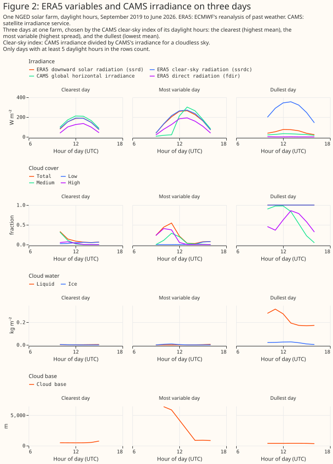
ERA5's solar radiation differs from CAMS's irradiance in ways that depend on cloud. On the clearest day ERA5 is slightly darker than CAMS, and on the dullest day ERA5 is brighter. Binned by ERA5's cloud liquid water and the other cloud variables, the gap is mixed: in the hours with the most cloud liquid water, ERA5 is darker than CAMS. CAMS is a satellite estimate, so a gap is a disagreement and not necessarily an ERA5 error. Figures 3 to 5 show where ERA5's solar radiation differs from CAMS, and how CAMS's clearness index falls with ERA5's cloud cover and cloud water.
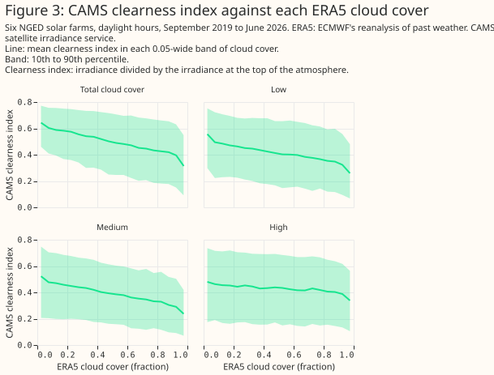
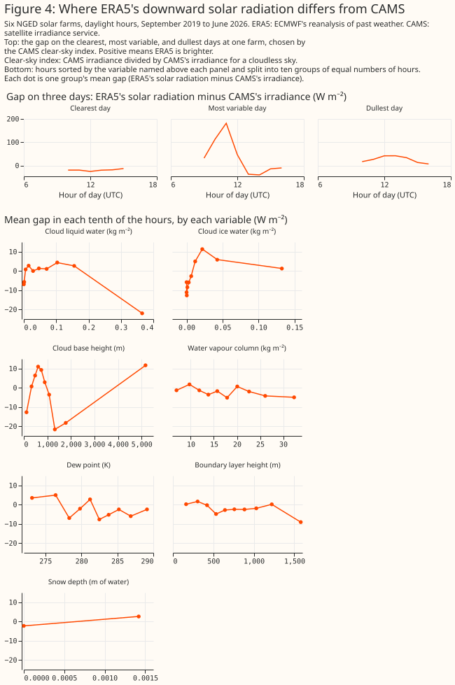
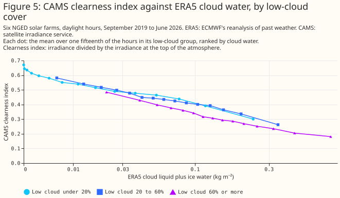
The XGBoost models work
Predictions follow the measured output on months the XGBoost models never saw. Figure 6 draws three days at every farm, chosen separately for each farm as the clearest, most variable, and dullest by CAMS's clear-sky index. The bottom panel gives each farm's error for four variable sets. The farms are labelled A to F, and the full set has the lowest error at every farm. The clearest day at a farm can be a winter day, so its output can peak well below capacity.
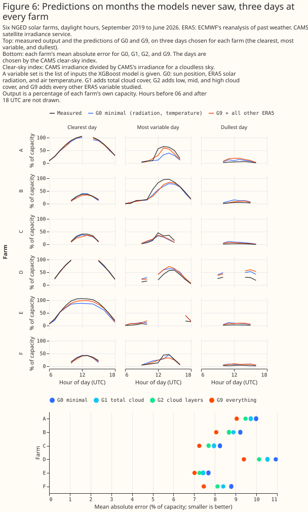
Every variable set scored on the same hours
The leaderboard shows the ladder, both controls, and the drop-one runs on the farms' output. The leaderboard's intervals overlap more than the paired differences of Figure 1 do, because every variable set's error rises and falls with the weather.
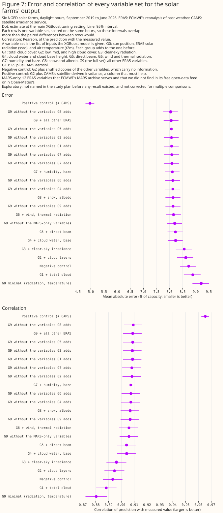
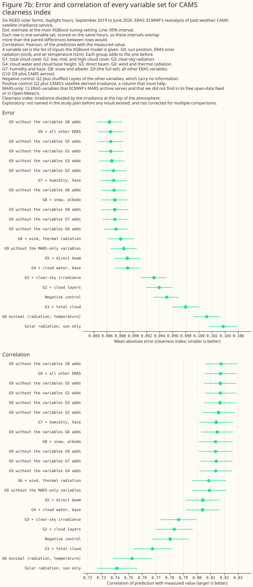
The gain is similar in every season and ERA5 cloud regime
The full set lowers the error by 11% to 14% of the farms' output error in every season and in every regime of ERA5's total cloud cover. Clear, broken, and overcast hours gain 13.7%, 11.2%, and 13.1% of their error. Regimes defined from CAMS's clear-sky index differ more: broken skies gain 9.0% and overcast skies 16.8%.
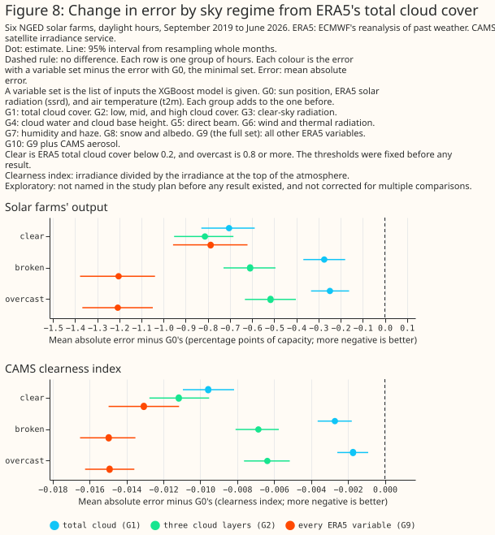
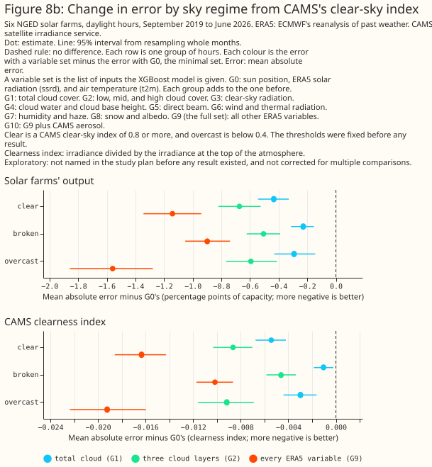
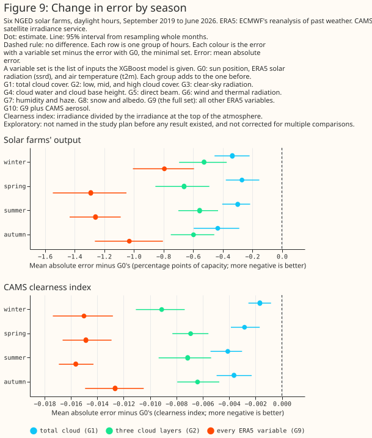
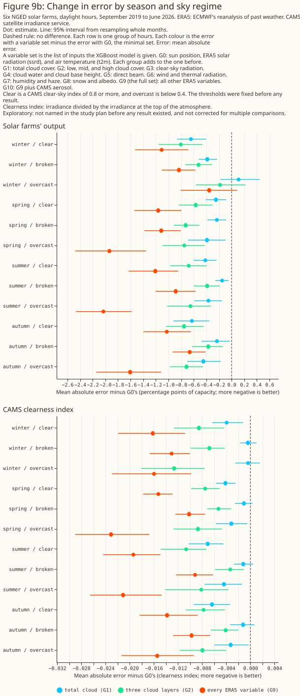
Removing one group raises the error little
Removing any one group from the full set raises the error by at most 0.07 points on output, probably because the groups overlap. Removing the last group (G9, 0.07), cloud water and base (G4, 0.06), or wind and thermal radiation (G6, 0.06) raises the error most. By the rule fixed in the plan, a group is useful only if both its step in the ladder and its drop-one run show a gain. At the main tuning setting, the useful groups are the cloud layers, cloud water and base, wind and thermal radiation, humidity and haze, and the remaining ERA5 variables. Total cloud, clear-sky irradiance, and the direct beam are not useful once the other groups are present. At the second setting, removing total cloud raises the error by 0.02 points [0.01, 0.04]. Snow and albedo make the error worse. The credit moves if the order of the ladder changes, so only the planned contrasts are firm, and these group-level statements are exploratory.
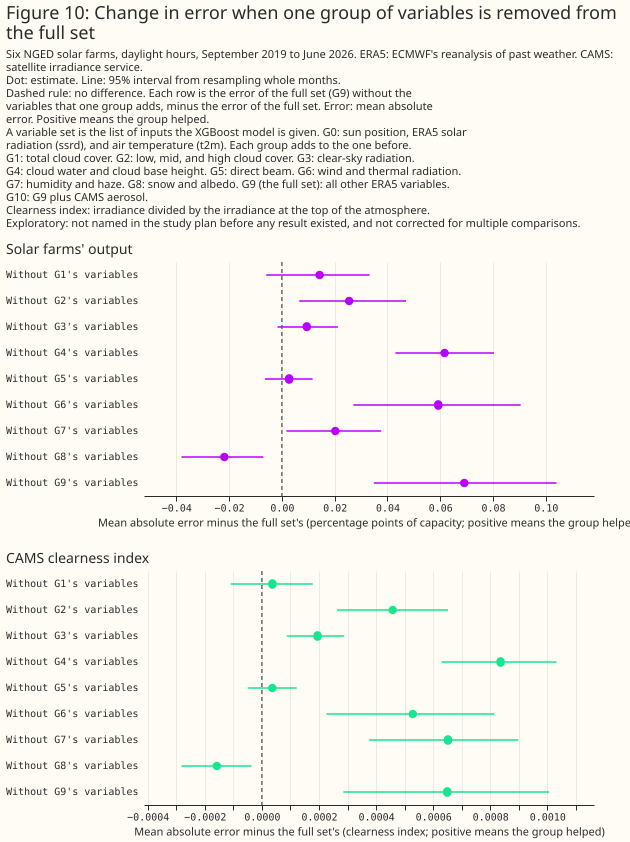
The gain changes with the hour of the day
As a share of the error, the full set's gain is largest from 13 to 17 UTC, and the gain from cloud water and cloud base steps up between the labels 09 and 10 UTC. At the farms' output, the G4 step is 1.4% of the error at 09 UTC [95% interval −0.21 to −0.02 points] and 3.8% at 10 UTC [−0.51 to −0.25 points], so the two intervals do not overlap. On the CAMS target the step is 2.7% at 09 UTC and 4.9% at 10 UTC. In summer, when the sun is high at 09 UTC, the output step is from 1.9% to 4.2%. The full set lowers the error by 8.1% at 09 UTC and by 14% to 15% from 13 to 17 UTC.
On the output target, the full set is worse than the minimal set at low sun. It is worse by 0.13 to 0.17 points at 05, 06, 19, and 20 UTC. At the same hours, 29 shuffled columns make the error worse by 0.05 to 0.11 points, so extra columns explain part of that penalty but not all of it. The cloud-water step alone makes 05 UTC worse by 0.10 points. The penalty does not appear on the CAMS target, where the full set is better at every hour from 06 to 20 UTC and indistinguishable at 05 UTC. The penalty is therefore more likely to come from the farms' low-sun output than from ERA5.
The step is one candidate explanation among three, and the page does not establish any of them. ERA5 builds its cloud, humidity, and wind fields from the analysis, whose window changes between 09 and 10 UTC. Each instantaneous value at label H is the mean of the raw values at H−1 and H, so label 10 is the first label that holds data from the new analysis window. ERA5 builds solar radiation from forecasts started at 06 and 18 UTC. A step between the labels 09 and 10 UTC is what a timing advantage of the analysis fields would produce. A second explanation is that solar radiation at labels 07 to 18 UTC comes from the 06 UTC forecast at steps 1 to 12, so the afternoon values are later steps of that forecast and their error may grow. A third is that cloud types vary with the time of day. Total cloud and the cloud layers (G2 minus G0) are also analysis fields, and their gain rises smoothly from 09 to 11 UTC with no step. A refit with the instantaneous fields taken at label H−1 only would test the timing explanation, because the step should then move one label later. That refit was not run.
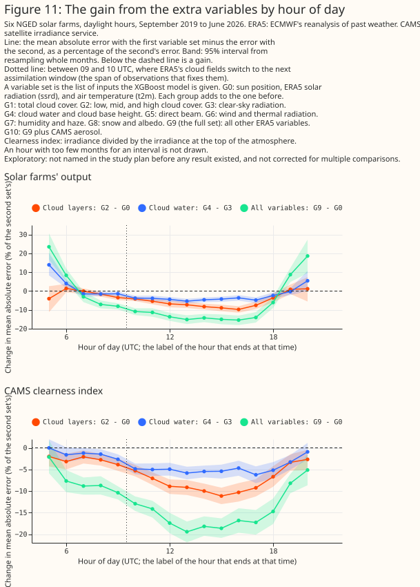
Which variables the XGBoost model leans on
ERA5's solar radiation takes about two thirds of the full set's importance, then the ultraviolet flux (7.2%), the direct beam (5.2%), and rain water (1.9%). Three of the six most important variables are MARS-only: the ultraviolet flux, rain water, and the forecast albedo. The ultraviolet flux and the forecast albedo come from the same forecast as solar radiation, so those two variables have no timing advantage. The importance of an XGBoost model is descriptive, because correlated variables share the credit. The largest shuffled copy takes 0.09%, so the 12 most important variables are well above that noise line.
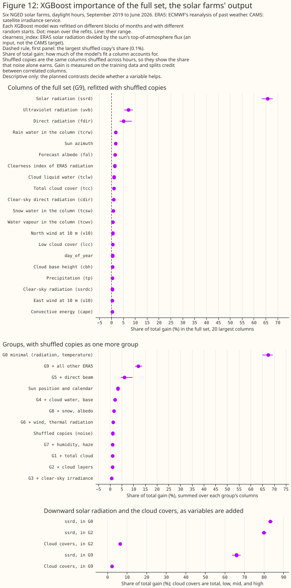
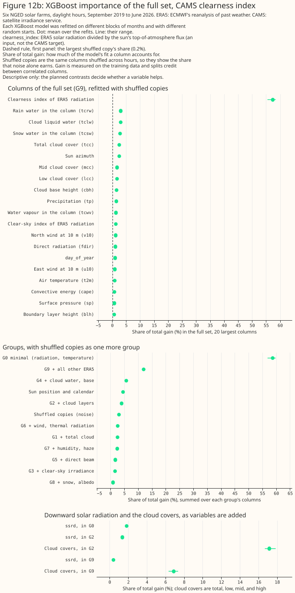
The extra variables do not improve the uncertainty estimates
The quantile fits' 10% to 90% intervals contain 72% to 76% of outcomes, against the 80% they aim for. The full set's intervals are 17% narrower than the minimal set's, and contain 72.8% of outcomes against 75.9%. At that coverage, one fixed-width interval from the same errors is 21.4 points of capacity wide. The full set's quantile fit is 22.9 points wide, so the fixed-width interval is 0.934 of its width (0.995 for the minimal set). The fixed-width interval is fitted on the errors it is scored on, which flatters it slightly. The ratio nevertheless falls as variables are added. The extra variables therefore do not help the XGBoost model estimate its own uncertainty by this test.
The comparison matches average width and average coverage only, so it cannot show whether the intervals adapt across hours. The continuous ranked probability score (CRPS) scores a whole predicted distribution, and a lower score is better. The CRPS falls from 6.32 to 5.65 points of capacity, in line with the better central estimate.
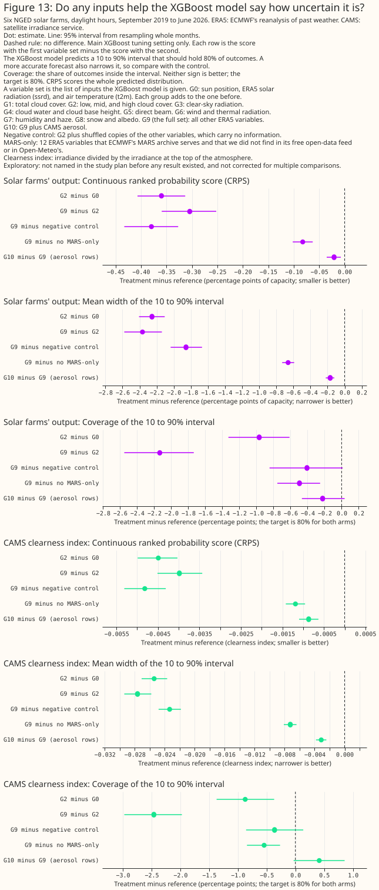
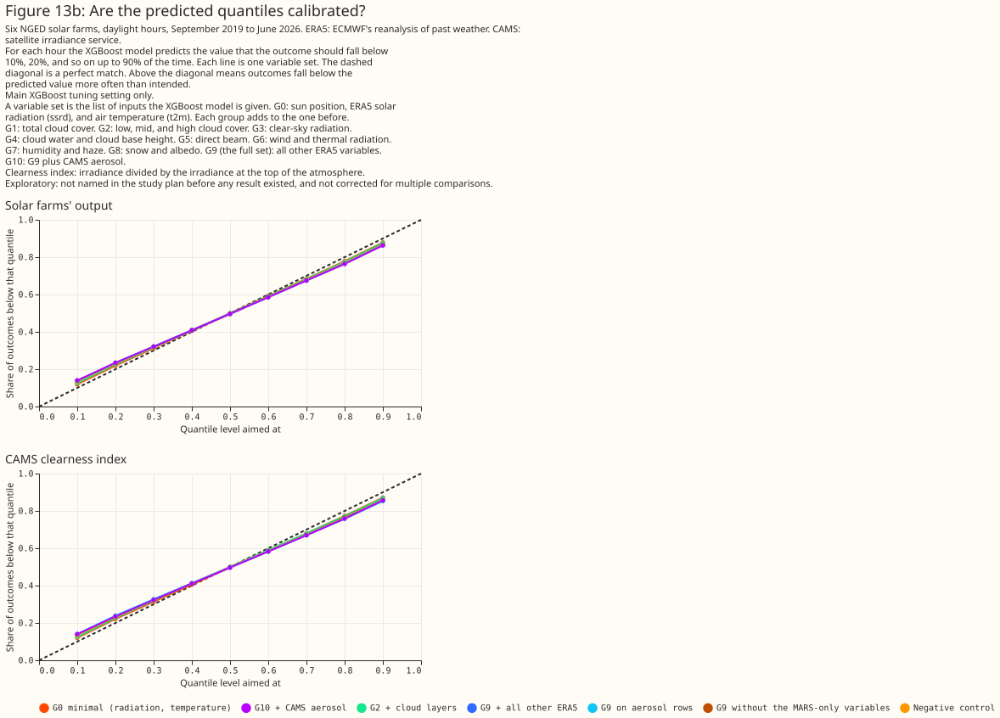
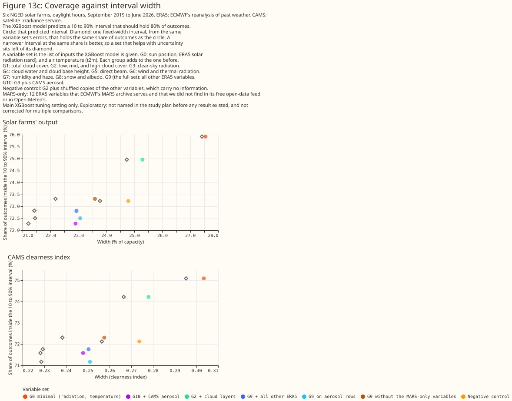
Aerosol adds little, and dusty hours are too few to say
On the hours that the CAMS global reanalysis covers, aerosol changes the error by −0.03 points [−0.05, +0.00]. Across all hours, a gain of 0.1 points is ruled out at the 95% level. In clear and dusty hours (55 days in 27 months), the interval is −0.26 to +0.29 points, so the study cannot say whether aerosol helps there. The aerosol reading rule needed at least 20 days in 12 months and an interval wholly below −0.1 points at both settings, and the outcome is "not shown". In dusty hours, aerosol moves the mean signed error from +0.83 to −0.08 points, so aerosol removes an over-estimate without lowering the mean absolute error. The CAMS target's gain of 0.001 is partly circular, because CAMS's irradiance is built with CAMS's aerosol analyses.
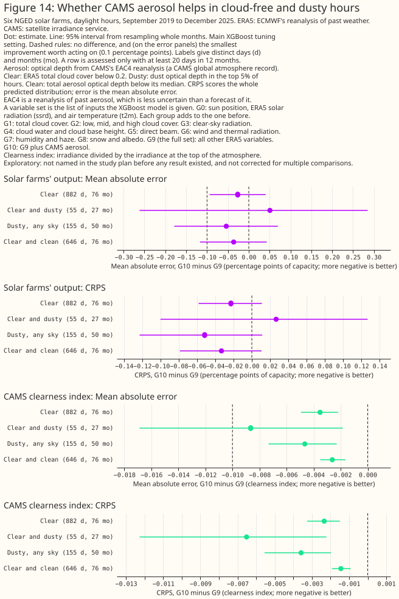
Why cloud variables can add to ERA5's solar radiation
A literature search done for this study found four pieces of evidence on why ERA5's other variables can add to its own solar radiation. The first concerns the radiation scheme. ERA5 runs IFS cycle 41r2 (Hersbach et al. (2020)), whose radiation scheme sees only a monthly aerosol climatology (Tegen et al. (1997)). The scheme corrects its fluxes between hourly radiation calls for the sun's movement but not for changing cloud (Hogan and Bozzo (2015)).
The second is a cloud-dependent bias, and the third is the study's own seam check. At European stations, ERA5 overestimates irradiance under cloud and slightly underestimates it under clear sky, and the bias grows when irradiance is turned into PV output (Urraca et al. (2018a); Urraca et al. (2018b)). In this study, ERA5's downloaded cloud, humidity, and wind fields change at the analysis window boundaries, so they appear to come from the analysis. The analysis saw later observations than the 06 and 18 UTC forecasts that give solar radiation.
The fourth is a published precedent on forecasts. The most similar study the search found post-processed a regional weather model's irradiance forecasts at Dutch stations, using the same weather model's cloud, cloud water, humidity, and direct radiation. That study raised the root-mean-square-error skill by 2% to 3% in winter and by 7.5% to 10% in summer and autumn (Bakker et al. (2019)). The result is on forecasts, so it is evidence that the effect can survive without a reanalysis's timing advantage. The search found no paper that corrected ERA5 irradiance over Europe with humidity predictors.
Discussion: what to use
- Ingest total cloud cover first, and the cloud layers second, when choosing variables for a forecast of solar output. Total cloud cover alone gives 0.32 points. The cloud layers give another 0.27 points. Once every other group is present, removing total cloud cover raises the error by only 0.01 to 0.02 points. Cloud water and cloud base height give a further 0.33 points but are MARS-only. The cloud layers are in Open-Meteo's IFS service, and the page did not find them in ECMWF's free open-data feed. Whether a forecast gains the same is untested here, and the follow-up IFS study tests that question.
- Do not decide on the 12 MARS-only variables from this page. The gain of 0.11 to 0.13 points is real and may or may not exceed 0.1 points. The question is whether another weather model's forecast would give more, and the follow-up IFS study measures that.
- Check which groups a forecast supplier can deliver before ranking them. On 2026-10-10, ECMWF's free open-data page listed total cloud cover, 2 m dew point, total column water vapour, 10 m wind, skin temperature, snow depth, precipitation, and downward solar and thermal radiation. It did not list the cloud layers, the cloud water and cloud base height, the direct beam, the clear-sky radiation, or the boundary layer height. Open-Meteo's IFS service lists total and layered cloud cover, direct radiation, boundary layer height, and total column water vapour. It does not list the clear-sky radiation, the cloud water, or the cloud base height. The "not listed" entries were not rechecked against ECMWF's full parameter table, ECMWF's open-data list may have widened since, and the page did not check every MARS-only variable against each service.
- The study found no gain from reanalysis aerosol. EAC4 is a reanalysis of past aerosol, which is less uncertain than a forecast of aerosol, so a forecast would be unlikely to gain more.
Limitations
- ERA5 is not a forecast. Part of the gain from cloud, humidity, and wind variables may come from those fields having seen later observations than solar radiation. The hour-of-day figure fits that reading but does not prove it. ERA5 uses IFS cycle 41r2, which is not the cycle of the 2026 operational forecast.
- The order in which variables were added sets how credit is split. A group that comes later gets only what the earlier groups missed.
- Extra columns make the error worse. Twenty-nine shuffled columns made the error 0.11 points worse, so the wide sets' gains are probably understated. Informative but correlated columns may make the error worse by less than shuffled ones.
- Six farms in one county share weather. The sample size is months of weather. The intervals cover that, not differences between farms or regions.
- The hours with a zero half-hour are dropped, and the page does not count them. The rule uses measured output, so it removes some low-sun hours and may remove some clear-day hours. A variant that keeps those hours when the ground is snow-covered was not run, so the snow and albedo variables are untested where they would matter.
- Some worst days look like output faults. Eight of the worst 20 days at the minimal set are at one farm in March 2025, and several are clear days with almost no output. Such days add noise to every variable set, and the contrasts are paired, so the contrasts stand. The study's generated report lists those days.
- Some second-setting runs were added after the first results. Every planned contrast ran at both settings, as planned. For exploratory rows, the second setting was run after the first results, for rows on either target whose 95% interval ended within a fifth of its width of zero, a rule written in an early version of the plan.
- The aerosol rows end in December 2025, when the CAMS global reanalysis ends, so the aerosol comparison covers fewer months than the rest.
- The correlation in the leaderboard is dominated by the daily cycle. On the farms' output, every variable set except the positive control sits between 0.88 and 0.91, so the correlation is a weak guide.
Scope
The page says nothing about forecast skill, other regions, wind, or any lead time. The study tests ERA5 only, and the CAMS global reanalysis's aerosol only for the hours that reanalysis covers.
Data and code availability
ERA5 comes from Google's ARCO-ERA5 copy and from the Copernicus Climate Data Store, and the two
agreed to floating-point rounding on the variables and months checked. CAMS irradiance and the
CAMS global reanalysis aerosol come from the Copernicus Atmosphere Data Store. The page contains
modified Copernicus Climate Change Service information (ERA5) and modified Copernicus Atmosphere
Monitoring Service information (CAMS irradiance and the CAMS global reanalysis). The farms' output
is private to National Grid Electricity Distribution (NGED) and appears only as fractions of each
farm's capacity under labels A to F. The code is in studies/era5_solar_variables/ and
packages/studies/. XGBoost runs on a graphics processing unit with colsample_bytree=1 and the
settings in "Data and methods".
Reproducing the figures
uv run --with netCDF4 python studies/weather_downloads/fetch_era5_solar_variables.py --tier tier1a
uv run --with zarr --with gcsfs python studies/weather_downloads/fetch_era5_solar_arco.py --tier tier1b
uv run --with zarr --with gcsfs python studies/weather_downloads/fetch_era5_solar_arco.py --tier tier2
uv run --with zarr --with gcsfs python studies/weather_downloads/fetch_era5_solar_arco.py --tier tier3
uv run python studies/weather_downloads/fetch_cams_eac4_aod.py
uv run --with netcdf4 python studies/era5_solar_variables/era5_ladder_build_dataset.py
uv run python studies/era5_solar_variables/era5_ladder_fit.py --view both --max-workers 8
uv run python studies/era5_solar_variables/era5_ladder_fit.py --view extra_sensitivity \
--sensitivity-arms drop_g1 drop_g2 drop_g3 drop_g7 drop_g8 g7 g8 --max-workers 8
uv run python studies/era5_solar_variables/era5_ladder_importance.py --through-rung g9
uv run python studies/era5_solar_variables/era5_ladder_report.py
uv run --with vl-convert-python python studies/era5_solar_variables/era5_ladder_charts.py